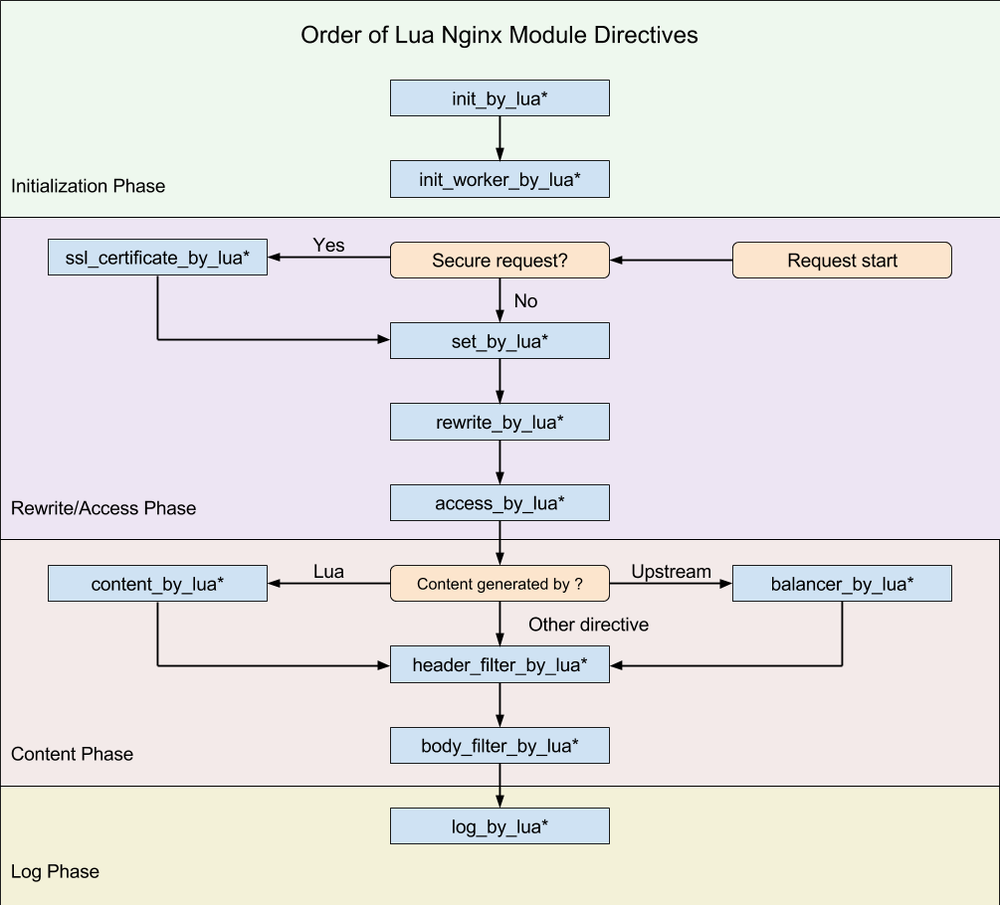
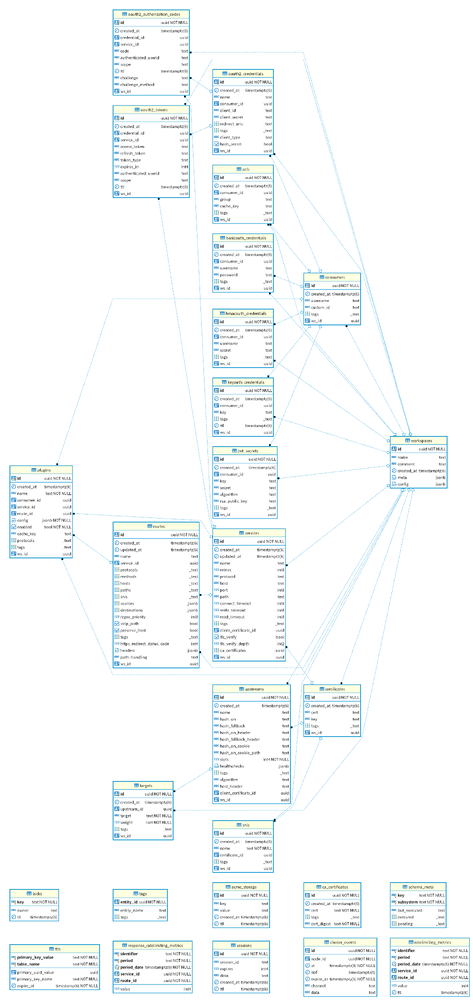

本文针对 Kong 的启动流程、插件机制、缓存机制和请求的生命周期做了详细的阐述。
1. 概述
本文针对的是 Kong 2.1 版本（Stable）。
我阅读并作出中文注释的 Commits 可以在这里看到：
https://github.com/mayocream/kong/commits?author=mayocream
Kong（OpenResty）的执行阶段：

Kong 的插件机制也是基于 OpenResty 的生命周期，只不过是其在上层做了些许封装。
Kong 的数据库关联关系：

Kong 虽然介绍中说是 Cloud Native 项目，也上榜了 CNCF 全景图，但是它还依赖于传统的数据库 PostgreSQL，并且还自定义了许多 Function，相比于 APISIX 的分布式储存 Etcd 显得较为弱势。比起 Etcd 客户端能建立 HTTP 长连接 Watch 数据变化，Kong 只能依赖定时的轮询从数据库更新状态，数据库高可用也相比搭建 Etcd 集群要复杂得多。
2. 配置文件
Kong 在启动阶段会解析 kong/templates 目录下的 .lua 模板文件，注入环境变量和 kong.conf 覆盖配置，生成 Nginx 启动的配置文件 nginx.conf。
结构如下：
pid pids/nginx.pid;
error_log logs/error.log notice;
# injected nginx_main_* directives
env SKYWALKING_URL;
events {
# injected nginx_events_* directives
multi_accept on;
worker_connections 16384;
}
http {
lua_package_path './?.lua;./?/init.lua;;;;';
lua_package_cpath ';;;';
lua_shared_dict kong 5m;
lua_shared_dict kong_locks 8m;
...
# injected nginx_http_* directives
client_body_buffer_size 8k;
init_by_lua_block {
Kong = require 'kong'
Kong.init()
}
init_worker_by_lua_block {
Kong.init_worker()
}
upstream kong_upstream {
server 0.0.0.1;
# injected nginx_upstream_* directives
balancer_by_lua_block {
Kong.balancer()
}
}
# Kong Proxy
server {
server_name kong;
...
}
# Kong Admin API
server {
server_name kong_admin;
...
}
}
Kong 定义了 NGINX_MAIN_XXX，诸如此类的环境变量，在解析配置阶段会加载到 nginx.conf 的指定位置，能够避免直接修改模板文件。
例如：
# 在 main 块里定义 env 变量
$ export NGINX_MAIN_ENV SKYWALKING_URL;
# 创建新的 lua shared dict
$ export NGINX_HTTP_Lua_SHARED_DICT tracing_buffer 128m;
Kong 官方的配置文档已经非常详尽，解释了各个参数代表的含义。
这里补充一点，通常我们需要定义多个 Shared dict，配置写法需要改成这种形式：
nginx_http_lua_shared_dict = cache_buffer_one 128m; lua_shared_dict cache_buffer_two 128m
3. 初始化
3.1. 数据库初始化
Kong.init() 方法中初始化数据库相关：
-- 数据库连接相关
local db = assert(DB.new(config))
assert(db:init_connector())
kong.db = db
DB.new() 方法中依次调用了 Schema.new()、Entity.new()、DAO.new() 方法，下面一个个来说明。
3.1.1. Schema
Kong 的 Schema 数据结构体位于 db/schema/entities 下，就 routes.lua 为例：
local typedefs = require "kong.db.schema.typedefs"
return {
name = "routes",
primary_key = { "id" },
endpoint_key = "name",
workspaceable = true,
subschema_key = "protocols",
fields = {
{ id = typedefs.uuid, },
{ created_at = typedefs.auto_timestamp_s },
{ updated_at = typedefs.auto_timestamp_s },
{ name = typedefs.name },
{ protocols = { type = "set",
len_min = 1,
required = true,
elements = typedefs.protocol,
mutually_exclusive_subsets = {
{ "http", "https" },
{ "tcp", "tls" },
{ "grpc", "grpcs" },
},
default = { "http", "https" }, -- TODO: different default depending on service's scheme
}, },
{ methods = typedefs.methods },
{ hosts = typedefs.hosts },
{ paths = typedefs.paths },
{ headers = typedefs.headers },
{ https_redirect_status_code = { type = "integer",
one_of = { 426, 301, 302, 307, 308 },
default = 426, required = true,
}, },
{ regex_priority = { type = "integer", default = 0 }, },
{ strip_path = { type = "boolean", default = true }, },
{ path_handling = { type = "string", default = "v0", one_of = { "v0", "v1" }, }, },
{ preserve_host = { type = "boolean", default = false }, },
{ snis = { type = "set",
elements = typedefs.sni }, },
{ sources = typedefs.sources },
{ destinations = typedefs.destinations },
{ tags = typedefs.tags },
{ service = { type = "foreign", reference = "services" }, },
},
entity_checks = {
{ conditional = { if_field = "protocols",
if_match = { elements = { type = "string", not_one_of = { "grpcs", "https", "tls" }}},
then_field = "snis",
then_match = { len_eq = 0 },
then_err = "'snis' can only be set when 'protocols' is 'grpcs', 'https' or 'tls'",
}},
}
}
primary_key 是在数据库中主键也是当 cache_key 未定义时的默认 cache_key。
有 type=foreign 的情况，entity 加载时会当作 subschema 加载进来。
插件不同于其他 entity，有特定 cache_key。
name = "plugins",
primary_key = { "id" },
cache_key = { "name", "route", "service", "consumer" },
Cache 相关操作中调用 Entity.cache_key() 获取。
local cache_key = dao:cache_key(entity)
local ok, err = cache:safe_set(cache_key, entity)
具体生成 cache_key 的方法，返回一个字符串作为缓存 key。
function DAO:cache_key(key, arg2, arg3, arg4, arg5, ws_id)
if self.schema.workspaceable then
ws_id = ws_id or workspaces.get_workspace_id()
end
-- Fast path: passing the cache_key/primary_key entries in
-- order as arguments, this produces the same result as
-- the generic code below, but building the cache key
-- becomes a single string.format operation
if type(key) == "string" then
return fmt("%s:%s:%s:%s:%s:%s:%s", self.schema.name,
key == nil and "" or key,
arg2 == nil and "" or arg2,
arg3 == nil and "" or arg3,
arg4 == nil and "" or arg4,
arg5 == nil and "" or arg5,
ws_id == nil and "" or ws_id)
end
-- Generic path: build the cache key from the fields
-- listed in cache_key or primary_key
if type(key) ~= "table" then
error("key must be a string or an entity table", 2)
end
if key.ws_id then
ws_id = key.ws_id
end
local values = new_tab(7, 0)
values[1] = self.schema.name
local source = self.schema.cache_key or self.schema.primary_key
local i = 2
for _, name in ipairs(source) do
local field = self.schema.fields[name]
local value = key[name]
if value == null or value == nil then
value = ""
elseif field.type == "foreign" then
-- FIXME extract foreign key, do not assume `id`
value = value.id
end
values[i] = tostring(value)
i = i + 1
end
for n = i, 6 do
values[n] = ""
end
values[7] = ws_id or ""
return concat(values, ":")
end
schema/init.lua 中定义了 schema 相关操作的基本方法：
-- each_field() 用于遍历 schema 的 fields
-- 是 schema 相关操作最频繁的
function Schema:each_field(values)
local i = 1
local subschema
if values then
subschema = get_subschema(self, values)
end
return function()
local item = self.fields[i]
if not item then
return nil
end
local key = next(item)
local field = resolve_field(self, key, item[key], subschema)
i = i + 1
return key, field
end
end
Schema.new() 方法中通过元组设置 __index 让结构体继承 Schema 下定义的一系列操作方法。
function Schema.new(definition, is_subschema)
if not definition then
return nil, validation_errors.SCHEMA_NO_DEFINITION
end
if not definition.fields then
return nil, validation_errors.SCHEMA_NO_FIELDS
end
local self = copy(definition)
-- 继承 Schema 下定义的一系列操作方法
setmetatable(self, Schema)
-- entity 缓存的 cache_key，
-- 如果没有这个字段，则默认使用 schema 定义的
-- primary_key 来作为 cache_key
-- cache_key 是个数组，
-- 这里只是分开储存
if self.cache_key then
self.cache_key_set = {}
for _, name in ipairs(self.cache_key) do
self.cache_key_set[name] = true
end
end
-- 通过元组 __index 方法调用 Schema:each_field() 方法
-- 遍历 schema 的 fields table
for key, field in self:each_field() do
-- Also give access to fields by name
self.fields[key] = field
if field.type == "record" and field.fields then
allow_record_fields_by_name(field)
end
-- 如果有外键
-- 则加载外键关联的 schema 进来
if field.type == "foreign" then
local err
field.schema, err = get_foreign_schema_for_field(field)
if not field.schema then
return nil, err
end
if not is_subschema then
-- Store the inverse relation for implementing constraints
local constraints = assert(_cache[field.reference]).constraints
table.insert(constraints, {
schema = self,
field_name = key,
on_delete = field.on_delete,
})
end
end
end
if self.workspaceable and self.name then
if not _workspaceable[self.name] then
_workspaceable[self.name] = true
table.insert(_workspaceable, { schema = self })
end
end
if self.name then
-- do not reset the constraints list if a schema in reloaded
if not _cache[self.name] then
_cache[self.name] = {
constraints = {},
}
end
-- but always update the schema object in cache
_cache[self.name].schema = self
end
return self
end
用于下级继承的元组。
local Schema = {}
Schema.__index = Schema
3.1.2. Entity
Entity 只是简单对 Schema 进行一层封装。
-- definition 是 schema 结构体
function Entity.new(definition)
-- 初始化 Schema 对象
local self, err = Schema.new(definition)
if not self then
return nil, err
end
-- 遍历 schema fields
for name, field in self:each_field() do
if field.nilable then
return nil, entity_errors.NO_NILABLE:format(name)
end
if field.abstract then
goto continue
end
if field.type == "map" then
if field.keys.type ~= "string" then
return nil, entity_errors.MAP_KEY_STRINGS_ONLY:format(name)
end
elseif field.type == "record" then
make_records_required(field)
elseif field.type == "function" then
return nil, entity_errors.NO_FUNCTIONS:format(name)
end
::continue::
end
self.new_subschema = Entity.new_subschema
return self
end
Entity 对象随后被加载到 DB.new() 函数中：
local schemas = {}
do
-- load schemas
-- core entities are for now the only source of schemas.
-- TODO: support schemas from plugins entities as well.
-- 载入核心 entity，为什么是核心 entity
-- 因为还有 plugin 自定义的 entity
-- 这些 entity 是 Kong 自身的
for _, entity_name in ipairs(constants.CORE_ENTITIES) do
-- 加载 schema（数据结构体）
local entity_schema = require("kong.db.schema.entities." .. entity_name)
-- validate core entities schema via metaschema
local ok, err_t = MetaSchema:validate(entity_schema)
if not ok then
return nil, fmt("schema of entity '%s' is invalid: %s", entity_name,
tostring(errors:schema_violation(err_t)))
end
-- 加载 entity 对象
local entity, err = Entity.new(entity_schema)
if not entity then
return nil, fmt("schema of entity '%s' is invalid: %s", entity_name,
err)
end
schemas[entity_name] = entity
-- load core entities subschemas
local subschemas
ok, subschemas = utils.load_module_if_exists("kong.db.schema.entities." .. entity_name .. "_subschemas")
if ok then
for name, subschema in pairs(subschemas) do
local ok, err = entity:new_subschema(name, subschema)
if not ok then
return nil, ("error initializing schema for %s: %s"):format(entity_name, err)
end
end
end
end
end
3.1.3. DAO
db/dao/init.lua 中定义了一系列对数据库操作的方法，例如：
function DAO:select(primary_key, options)
function DAO:page(size, offset, options)
function DAO:each(size, options)
function DAO:insert(entity, options)
function DAO:update(primary_key, entity, options)
function DAO:delete(primary_key, options)
...
DAO.new() 会创建一个包含 db 连接信息，entity 的 table。
-- schema 参数是 Entity 对象
-- DB 结构体： local self = {
-- daos = daos, -- each of those has the connector singleton
-- strategies = strategies,
-- connector = connector,
-- strategy = strategy,
-- errors = errors,
-- infos = connector:infos(),
-- kong_config = kong_config,
-- }
function _M.new(db, schema, strategy, errors)
local fk_methods = generate_foreign_key_methods(schema)
-- 继承 DAO 基础方法
local super = setmetatable(fk_methods, DAO)
local self = {
db = db,
schema = schema,
strategy = strategy,
errors = errors,
pagination = utils.shallow_copy(defaults.pagination),
super = super,
}
if schema.dao then
-- 插件自定义的 dao
local custom_dao = require(schema.dao)
for name, method in pairs(custom_dao) do
self[name] = method
end
end
return setmetatable(self, { __index = super })
end
在 db\init.lua 中加载所有 DAO 对象。
do
-- load DAOs
for _, schema in pairs(schemas) do
local strategy = strategies[schema.name]
if not strategy then
return nil, fmt("no strategy found for schema '%s'", schema.name)
end
-- 储存 daos
daos[schema.name] = DAO.new(self, schema, strategy, errors)
end
end
和上面结构一样，DB.new() 中最后为 table 设置元组 __index 方法。
-- 设置元组 __index 方法
-- 访问不存在的对象则先
-- DB.xxx 再访问 DB.daos.xxx
return setmetatable(self, DB)
local DB = {}
DB.__index = function(self, k)
-- rawget 为不调用元组 __index 方法，直接获取原数据
return DB[k] or rawget(self, "daos")[k]
end
Kong 中其他地方调用数据库方法，操作符为 kong.db.services:each_fields()，即实际调用 daos.services、entity:each_fields()（实际是 Schema:each_fields()）。
DAO 下面还有封装的数据库操作层，例如 PostgreSQL 生成 SQL 语句的方法，这里就不赘述了。
3.2. 缓存构建
init_by_lua 阶段初始化 Master 进程，进行解析配置文件、连接数据库、清空共享内存、构建路由缓存等操作。
reset_kong_shm 代码块里清理共享内存。
local shms = {
"kong",
"kong_locks",
"kong_healthchecks",
"kong_process_events",
"kong_cluster_events",
"kong_rate_limiting_counters",
"kong_core_db_cache" .. suffix,
"kong_core_db_cache_miss" .. suffix,
"kong_db_cache" .. suffix,
"kong_db_cache_miss" .. suffix,
"kong_clustering",
}
for _, shm in ipairs(shms) do
local dict = ngx.shared[shm]
-- 清空共享内存
if dict then
dict:flush_all()
dict:flush_expired(0)
end
end
3.2.1. 路由缓存
else
-- DB 模式
local default_ws = db.workspaces:select_by_name("default")
kong.default_workspace = default_ws and default_ws.id
local ok, err = runloop.build_plugins_iterator("init")
if not ok then
error("error building initial plugins: " .. tostring(err))
end
-- 初始化路由
-- 构建路由缓存
assert(runloop.build_router("init"))
end
db:close()
end
DB 模式下最后一步会调用 runloop.build_router("init") 构建路由缓存。
构建路由缓存过程中，判断 Kong 是否已经初始化过 Cache 组件，init 阶段没有完成初始化 Cache，则创建一个 Lua table 缓存路由信息。build_services_init_cache() 方法会分页加载所有 Service 到 table 中，对取出来的 Services，判断当前使用的 Nginx 模式（http/stream）是否对应路由指定的协议，对应则取出 Service 对象，与 Route 进行关联。最后传递给 Router.new() 方法通过算法建立树形结构建立路由索引。
Kong 基于 Nginx Subsystem 支持的协议对应关系：
- http/https -> http
- grpc/grpcs -> http
- tcp/tls -> stream
build_router = function(version)
local db = kong.db
-- table 储存所有的 route-service 数据
local routes, i = {}, 0
local err
-- The router is initially created on init phase, where kong.core_cache is
-- still not ready. For those cases, use a plain Lua table as a cache
-- instead
-- init 阶段 core_cache 还没有初始化完成
-- 这里使用 table 储存
local services_init_cache = {}
if not kong.core_cache and db.strategy ~= "off" then
-- 获取所有的 services，使用默认的分页参数
services_init_cache, err = build_services_init_cache(db)
if err then
services_init_cache = {}
log(WARN, "could not build services init cache: ", err)
end
end
local counter = 0
local page_size = db.routes.pagination.page_size
for route, err in db.routes:each(nil, GLOBAL_QUERY_OPTS) do
if err then
return nil, "could not load routes: " .. err
end
-- 检查 router 数据是否已经变化
-- 通过检查 router hash 是否一致判断
-- 如果已经变化则退出函数
if db.strategy ~= "off" then
if kong.core_cache and counter > 0 and counter % page_size == 0 then
local new_version, err = get_router_version()
if err then
return nil, "failed to retrieve router version: " .. err
end
if new_version ~= version then
return nil, "router was changed while rebuilding it"
end
end
end
-- subsystem 是否支持当前路由的协议
if should_process_route(route) then
-- 获取 route 的 service
local service, err = get_service_for_route(db, route, services_init_cache)
if err then
return nil, err
end
local r = {
route = route,
service = service,
}
i = i + 1
-- 储存所有的 route-service
routes[i] = r
end
counter = counter + 1
end
local new_router, err = Router.new(routes)
if not new_router then
return nil, "could not create router: " .. err
end
-- router 实例
router = new_router
if version then
router_version = version
end
-- LEGACY - singletons module is deprecated
singletons.router = router
-- /LEGACY
return true
end
构建路由缓存过程中，判断 Kong 是否已经初始化过 Cache 组件，init 阶段没有完成初始化 Cache，则创建一个 Lua table 缓存 services。
-- 以 [service.id] = service
-- 结构储存到 table 中
local function build_services_init_cache(db)
local services_init_cache = {}
for service, err in db.services:each(nil, GLOBAL_QUERY_OPTS) do
if err then
return nil, err
end
services_init_cache[service.id] = service
end
return services_init_cache
end
build_services_init_cache(db) 方法，调用 DAO:each() 函数，使用默认分页参数 page_size=1000，进行分页获取，再返回可迭代的单条记录。这里因为 init_by_lua 阶段没有初始化缓存（kong.core_cache ），所以使用 Lua table 储存缓存数据。
function DAO:each(size, options)
if size ~= nil then
validate_size_type(size)
end
-- 获取分页条件，有默认值
options = get_pagination_options(self, options)
if size ~= nil then
local ok, err = validate_size_value(size, options.pagination.max_page_size)
if not ok then
local err_t = self.errors:invalid_size(err)
return nil, tostring(err_t), err_t
end
else
size = options.pagination.page_size
end
local ok, errors = validate_options_value(self, options)
if not ok then
local err_t = self.errors:invalid_options(errors)
return nil, tostring(err_t), err_t
end
local pager = function(size, offset, options)
return self.strategy:page(size, offset, options)
end
return iteration.by_row(self, pager, size, options)
end
默认分页参数在 db/strategies/connector.lua 文件中：
local Connector = {
defaults = {
-- 默认分页条件
pagination = {
page_size = 1000,
max_page_size = 50000,
},
},
}
接下来会遍历所有的 Routes，逐个调用 should_process_route() 和 get_service_for_route() 方法，前者会判断 Nginx Subsystem 是否和 Route 协议一致，后者先在缓存中查找 Service，如果缓存中不存在则从数据库中获取。
local function get_service_for_route(db, route, services_init_cache)
-- route 关联的 service 外键
local service_pk = route.service
if not service_pk then
return nil
end
-- 查找缓存 table 里的 service
local id = service_pk.id
local service = services_init_cache[id]
if service then
return service
end
local err
-- kong.core_cache is available, not in init phase
if kong.core_cache then
-- 通过 mlcache 查询 service
local cache_key = db.services:cache_key(service_pk.id, nil, nil, nil, nil,
route.ws_id)
-- 查询 cache 获取，没有获取到则调用 load_service_from_db 获取
service, err = kong.core_cache:get(cache_key, TTL_ZERO,
load_service_from_db, service_pk)
else -- init phase, kong.core_cache not available
-- A new service/route has been inserted while the initial route
-- was being created, on init (perhaps by a different Kong node).
-- Load the service individually and update services_init_cache with it
-- 直接查询数据库获取 service
service, err = load_service_from_db(service_pk)
services_init_cache[id] = service
end
if err then
return nil, "error raised while finding service for route (" .. route.id .. "): " ..
err
elseif not service then
return nil, "could not find service for route (" .. route.id .. ")"
end
-- TODO: this should not be needed as the schema should check it already
if SUBSYSTEMS[service.protocol] ~= subsystem then
log(WARN, "service with protocol '", service.protocol,
"' cannot be used with '", subsystem, "' subsystem")
return nil
end
return service
end
load_service_from_db() 方法中只是简单调用 DAO:select() 方法，取出 Service 同时缓存到 services_init_cache table 中，不更新 Kong.core_cache 组件。
对数据库实体对象的处理中，只有create 、update、delete 会通过事件广播到其他 Worker 同步，后面事件的一节我们会详细阐述。
接下来将 {router, service} 数组传入 router.iua 中 Router.new() 函数处理。
local new_router, err = Router.new(routes)
if not new_router then
return nil, "could not create router: " .. err
end
-- 绑定 router 实例
router = new_router
具体构建路由索引的过程在 router.lua 中的 _M.new(routes) 函数，使用 lua-resty-lrucache 包缓存，对路由和 Service 组合通过算法进行排序，构建索引，将诸如 {cache_key: {route, service}} 结构存入缓存中，返回 Router 实例。
路由索引 Key 的构建方法：
local cache_key = req_method .. "|" .. req_uri .. "|" .. req_host ..
"|" .. ctx.src_ip .. "|" .. ctx.src_port ..
"|" .. ctx.dst_ip .. "|" .. ctx.dst_port ..
"|" .. ctx.sni
Router 实例由 Master 进程构建，并 fork 到各个 Worker 进程使用。
Worker 执行完共享内存的构建后，注册定时任务，定时重建缓存。
-- 定时重建路由缓存
if kong.db.strategy ~= "off" then
timer_every(worker_state_update_frequency, function(premature)
if premature then
return
end
-- Don't wait for the semaphore (timeout = 0) when updating via the
-- timer.
-- If the semaphore is locked, that means that the rebuild is
-- already ongoing.
local ok, err = rebuild_router(ROUTER_ASYNC_OPTS)
if not ok then
log(ERR, "could not rebuild router via timer: ", err)
end
end)
timer_every(worker_state_update_frequency, function(premature)
if premature then
return
end
local ok, err = rebuild_plugins_iterator(PLUGINS_ITERATOR_ASYNC_OPTS)
if not ok then
log(ERR, "could not rebuild plugins iterator via timer: ", err)
end
end)
end
3.2.2. Entity 缓存
这里首先介绍一下 lua-resty-mlcache 这个缓存库，该库基于 lua_shared_dict 和 lua-resty-lrucache 做了两层缓存，Worker 会有自己的进程级别的 LRU 缓存，首先会在这一层进行查询，其次使用共享内存进行缓存，最后提供 callback 从数据库查询，使用 lua-resty-lock 库创建锁只允许单个进程执行 callback。
mlcache 架构图：
┌─────────────────────────────────────────────────┐
│ Nginx │
│ ┌───────────┐ ┌───────────┐ ┌───────────┐ │
│ │worker │ │worker │ │worker │ │
│ L1 │ │ │ │ │ │ │
│ │ Lua cache │ │ Lua cache │ │ Lua cache │ │
│ └───────────┘ └───────────┘ └───────────┘ │
│ │ │ │ │
│ ▼ ▼ ▼ │
│ ┌───────────────────────────────────────┐ │
│ │ │ │
│ L2 │ lua_shared_dict │ │
│ │ │ │
│ └───────────────────────────────────────┘ │
│ │ mutex │
│ ▼ │
│ ┌──────────────────┐ │
│ │ callback │ │
│ └────────┬─────────┘ │
└───────────────────────────┼─────────────────────┘
│
L3 │ I/O fetch
▼
Database, API, DNS, Disk, any I/O...
Kong.init_worker() 中进行初始化缓存：
-- 初始化基于共享内存的 cache
local cache, err = kong_global.init_cache(kong.configuration, cluster_events, worker_events)
if not cache then
stash_init_worker_error("failed to instantiate 'kong.cache' module: " ..
err)
return
end
kong.cache = cache
local core_cache, err = kong_global.init_core_cache(kong.configuration, cluster_events, worker_events)
if not core_cache then
stash_init_worker_error("failed to instantiate 'kong.core_cache' module: " ..
err)
return
end
kong.core_cache = core_cache
ok, err = runloop.set_init_versions_in_cache()
if not ok then
stash_init_worker_error(err) -- 'err' fully formatted
return
end
global.init_cache() 结构如下：
function _GLOBAL.init_cache(kong_config, cluster_events, worker_events)
local db_cache_ttl = kong_config.db_cache_ttl
local db_cache_neg_ttl = kong_config.db_cache_neg_ttl
local cache_pages = 1
if kong_config.database == "off" then
db_cache_ttl = 0
db_cache_neg_ttl = 0
cache_pages = 2
end
return kong_cache.new {
shm_name = "kong_db_cache",
cluster_events = cluster_events,
worker_events = worker_events,
ttl = db_cache_ttl,
neg_ttl = db_cache_neg_ttl or db_cache_ttl,
resurrect_ttl = kong_config.resurrect_ttl,
cache_pages = cache_pages,
resty_lock_opts = {
exptime = 10,
timeout = 5,
},
}
end
最终会调用 cache.lua 中 _M.new() 进行必要参数的验证，检测共享内存块是否可以访问，关联集群事件和 Worker 事件，定义序列化和反序列化的方法，对 mlcache 进行一层封装。
function _M.new(opts)
-- opts validation
opts = opts or {}
local mlcaches = {}
local shm_names = {}
for i = 1, opts.cache_pages or 1 do
local channel_name = (i == 1) and "mlcache" or "mlcache_2"
local shm_name = (i == 1) and opts.shm_name or opts.shm_name .. "_2"
local shm_miss_name = (i == 1) and opts.shm_name .. "_miss" or opts.shm_name .. "_miss_2"
if ngx.shared[shm_name] then
local mlcache, err = resty_mlcache.new(shm_name, shm_name, {
shm_miss = shm_miss_name,
shm_locks = "kong_locks",
shm_set_retries = 3,
lru_size = LRU_SIZE,
ttl = max(opts.ttl or 3600, 0),
neg_ttl = max(opts.neg_ttl or 300, 0),
resurrect_ttl = opts.resurrect_ttl or 30,
resty_lock_opts = opts.resty_lock_opts,
ipc = { -- 进程间通信的函数绑定
register_listeners = function(events)
for _, event_t in pairs(events) do
opts.worker_events.register(function(data)
event_t.handler(data)
end, channel_name, event_t.channel)
end
end,
broadcast = function(channel, data)
local ok, err = opts.worker_events.post(channel_name, channel, data)
if not ok then
log(ERR, "failed to post event '", channel_name, "', '",
channel, "': ", err)
end
end
}
})
if not mlcache then
return nil, "failed to instantiate mlcache: " .. err
end
mlcaches[i] = mlcache
shm_names[i] = shm_name
end
end
local curr_mlcache = 1
if opts.cache_pages == 2 then
curr_mlcache = ngx.shared.kong:get("kong:cache:" .. opts.shm_name .. ":curr_mlcache") or 1
end
local self = {
cluster_events = opts.cluster_events,
mlcache = mlcaches[curr_mlcache],
mlcaches = mlcaches,
shm_names = shm_names,
curr_mlcache = curr_mlcache,
}
local ok, err = self.cluster_events:subscribe("invalidations", function(key)
log(DEBUG, "received invalidate event from cluster for key: '", key, "'")
self:invalidate_local(key)
end)
if not ok then
return nil, "failed to subscribe to invalidations cluster events " ..
"channel: " .. err
end
_init[opts.shm_name] = true
return setmetatable(self, mt)
end
初始化完缓存模块后，Worker 会根据配置文件中的 db_cache_warmup_entities 加载指定的数据库资源到内存进行缓存，默认配置会缓存 services, plugins。
LRU_SIZE 值为 500,000，单位是 item，设置最大能储存的 item 数量，这个值表示单个 Worker LRU Cache 最大占用 500M 内存。
Worker 会根据配置项加载数据库实体到共享内存缓存。
local function execute_cache_warmup(kong_config)
if kong_config.database == "off" then
return true
end
-- 只在一个 worker 上执行操作
-- 加载数据库实体到共享内存缓存
if ngx.worker.id() == 0 then
local ok, err = cache_warmup.execute(kong_config.db_cache_warmup_entities)
if not ok then
return nil, err
end
end
return true
end
这里只在一个 Worker 进程上加载数据库数据，随后同步到其他的 Worker 上。
cache_warmup.execute() 里做基本信息的检测，随后调用 cache_warmup_single_entity(dao) 方法。
-- 加载数据库实体到缓存，以实现更快的访问速度
-- 在 Worker 初始化阶段运行
-- 默认加载 service, plugins
-- 大小受配置 mem_cache_size 影响
-- Loads entities from the database into the cache, for rapid subsequent
-- access. This function is intented to be used during worker initialization.
function cache_warmup.execute(entities)
if not kong.cache or not kong.core_cache then
return true
end
for _, entity_name in ipairs(entities) do
if entity_name == "routes" then
-- do not spend shm memory by caching individual Routes entries
-- because the routes are kept in-memory by building the router object
kong.log.notice("the 'routes' entry is ignored in the list of ",
"'db_cache_warmup_entities' because Kong ",
"caches routes in memory separately")
goto continue
end
local dao = kong.db[entity_name]
if not (type(dao) == "table" and dao.schema) then
kong.log.warn(entity_name, " is not a valid entity name, please check ",
"the value of 'db_cache_warmup_entities'")
goto continue
end
local ok, err = cache_warmup_single_entity(dao)
if not ok then
if err == "no memory" then
kong.log.warn("cache warmup has been stopped because cache ",
"memory is exhausted, please consider increasing ",
"the value of 'mem_cache_size' (currently at ",
kong.configuration.mem_cache_size, ")")
return true
end
return nil, err
end
::continue::
end
return true
end
不缓存 Routes，因为 Route 已经在上一节中构建为路由索引树，通过 fork 到所有的 Worker 内存里了。
local function cache_warmup_single_entity(dao)
local entity_name = dao.schema.name
-- 选定储存地方 cache/core_cache
local cache_store = constants.ENTITY_CACHE_STORE[entity_name]
-- cache 全局对象
local cache = kong[cache_store]
ngx.log(ngx.NOTICE, "Preloading '", entity_name, "' into the ", cache_store, "...")
local start = ngx.now()
local hosts_array, hosts_set, host_count
if entity_name == "services" then
hosts_array = {}
hosts_set = {}
host_count = 0
end
for entity, err in dao:each(nil, GLOBAL_QUERY_OPTS) do
if err then
return nil, err
end
if entity_name == "services" then
if utils.hostname_type(entity.host) == "name"
and hosts_set[entity.host] == nil then
host_count = host_count + 1
hosts_array[host_count] = entity.host
hosts_set[entity.host] = true
end
end
-- 获取 cache_key
local cache_key = dao:cache_key(entity)
-- 调用 mlcache 的 safe_set 方法，
-- 内存不足会报错
local ok, err = cache:safe_set(cache_key, entity)
if not ok then
return nil, err
end
end
if entity_name == "services" and host_count > 0 then
ngx.timer.at(0, warmup_dns, hosts_array, host_count)
end
local elapsed = math.floor((ngx.now() - start) * 1000)
ngx.log(ngx.NOTICE, "finished preloading '", entity_name,
"' into the ", cache_store, " (in ", tostring(elapsed), "ms)")
return true
end
cache_warmup_single_entity() 会加载该 dao 所有的数据到内存中，set 方法会分发事件同步数据到其他的 Worker 上，最终每个 Worker 都会缓存一份。
3.3. 事件订阅
Kong.init_worker() 中初始化 Worker 事件和集群事件。
local worker_events, err = kong_global.init_worker_events()
if not worker_events then
stash_init_worker_error("failed to instantiate 'kong.worker_events' " ..
"module: " .. err)
return
end
kong.worker_events = worker_events
local cluster_events, err = kong_global.init_cluster_events(kong.configuration, kong.db)
if not cluster_events then
stash_init_worker_error("failed to instantiate 'kong.cluster_events' " ..
"module: " .. err)
return
end
kong.cluster_events = cluster_events
Worker 事件内部是使用 lua-resty-worker-events 库实现的进程间事件处理，原理是通过共享内存储存事件，每秒拉取共享内存中的事件，进行处理。
function _GLOBAL.init_worker_events()
-- Note: worker_events will not work correctly if required at the top of the file.
-- It must be required right here, inside the init function
local worker_events = require "resty.worker.events"
local ok, err = worker_events.configure {
shm = "kong_process_events", -- defined by "lua_shared_dict"
timeout = 5, -- life time of event data in shm
interval = 1, -- poll interval (seconds)
wait_interval = 0.010, -- wait before retry fetching event data
wait_max = 0.5, -- max wait time before discarding event
}
if not ok then
return nil, err
end
return worker_events
end
集群事件（多个 Kong 之间的通信）是通过将事件储存在数据库中，定时轮询数据库查询事件，进行处理。
function _GLOBAL.init_cluster_events(kong_config, db)
return kong_cluster_events.new({
db = db,
poll_interval = kong_config.db_update_frequency,
poll_offset = kong_config.db_update_propagation,
poll_delay = kong_config.db_update_propagation,
})
end
从这里可以看到集群事件是通过数据库表实现的：
function _M:broadcast(channel, data, delay)
if type(channel) ~= "string" then
return nil, "channel must be a string"
end
if type(data) ~= "string" then
return nil, "data must be a string"
end
if delay and type(delay) ~= "number" then
return nil, "delay must be a number"
elseif self.poll_delay > 0 then
delay = self.poll_delay
end
-- insert event row
--log(DEBUG, "broadcasting on channel: '", channel, "' data: ", data,
-- " with delay: ", delay and delay or "none")
local ok, err = self.strategy:insert(self.node_id, channel, nil, data, delay)
if not ok then
return nil, err
end
return true
end
function _M:subscribe(channel, cb, start_polling)
if type(channel) ~= "string" then
return error("channel must be a string")
end
if type(cb) ~= "function" then
return error("callback must be a function")
end
if not self.callbacks[channel] then
self.callbacks[channel] = { cb }
insert(self.channels, channel)
else
insert(self.callbacks[channel], cb)
end
if start_polling == nil then
start_polling = true
end
if not self.polling and start_polling and self.use_polling then
-- start recurring polling timer
local ok, err = timer_at(self.poll_interval, poll_handler, self)
if not ok then
return nil, "failed to start polling timer: " .. err
end
self.polling = true
end
return true
end
在 cache.lua 中集群事件订阅 cache 失效事件，内部调用 mlcache 的 delete 方法，同步到所有的 Worker 上。
local ok, err = self.cluster_events:subscribe("invalidations", function(key)
log(DEBUG, "received invalidate event from cluster for key: '", key, "'")
self:invalidate_local(key)
end)
function _M:invalidate_local(key, shadow)
if type(key) ~= "string" then
error("key must be a string", 2)
end
log(DEBUG, "invalidating (local): '", key, "'")
local current_page = self.curr_mlcache or 1
local delete_page
if shadow and #self.mlcaches == 2 then
delete_page = current_page == 1 and 2 or 1
else
delete_page = current_page
end
local ok, err = self.mlcaches[delete_page]:delete(key)
if not ok then
log(ERR, "failed to delete entity from node cache: ", err)
end
end
这部分主要描述 Kong 初始化过程中的事件相关操作，主要是初始化事件订阅，关联到 mlcache 的 IPC 进程间通信，订阅 cache 的失效事件，并关联 DAO 的事件发布。
function DB:set_events_handler(events)
for _, dao in pairs(self.daos) do
dao.events = events
end
end
4. 事件分发
Kong 中众多部分通过非阻塞的 ngx.timer.at() 和 ngx.timer.every() 函数执行定时任务。这一部分较为分散，主要叙述 Kong 执行非阻塞一次性事件处理，和典型的定时任务。
4.1. 单次任务
4.1.1. DNS 解析
在 cache_warmup.lua 中缓存 services 对象时，Kong 会非阻塞地获取 services 中 host 对应的 IP。
if entity_name == "services" and host_count > 0 then
ngx.timer.at(0, warmup_dns, hosts_array, host_count)
end
local function warmup_dns(premature, hosts, count)
if premature then
return
end
ngx.log(ngx.NOTICE, "warming up DNS entries ...")
local start = ngx.now()
for i = 1, count do
kong.dns.toip(hosts[i])
end
local elapsed = math.floor((ngx.now() - start) * 1000)
ngx.log(ngx.NOTICE, "finished warming up DNS entries",
"' into the cache (in ", tostring(elapsed), "ms)")
end
Kong 内部 dns 模块使用 lua-resty-dns-client，这个库也是由 Kong 开源的，toip 函数会根据 DNS 返回 ip 的权重配置加权轮询的权重，储存 DNS 查询的结果在内存中。
warmup_dns() 内调用 kong.dns.toip() 方法：
local function warmup_dns(premature, hosts, count)
if premature then
return
end
ngx.log(ngx.NOTICE, "warming up DNS entries ...")
local start = ngx.now()
for i = 1, count do
kong.dns.toip(hosts[i])
end
local elapsed = math.floor((ngx.now() - start) * 1000)
ngx.log(ngx.NOTICE, "finished warming up DNS entries",
"' into the cache (in ", tostring(elapsed), "ms)")
end
4.2. 定时任务
4.2.1. 集群任务
cluster_events/init.lua 中集群事情订阅函数里启用定时器轮询数据库集群事件表。
function _M:subscribe(channel, cb, start_polling)
if type(channel) ~= "string" then
return error("channel must be a string")
end
if type(cb) ~= "function" then
return error("callback must be a function")
end
if not self.callbacks[channel] then
self.callbacks[channel] = { cb }
insert(self.channels, channel)
else
insert(self.callbacks[channel], cb)
end
if start_polling == nil then
start_polling = true
end
if not self.polling and start_polling and self.use_polling then
-- start recurring polling timer
local ok, err = timer_at(self.poll_interval, poll_handler, self)
if not ok then
return nil, "failed to start polling timer: " .. err
end
self.polling = true
end
return true
end
这里因为要在每次循环调用时进行锁的判断，所以没有使用 ngx.timer.every() 函数，而是循环调用 ngx.timer.at()。
poll_handler = function(premature, self)
if premature or not self.polling then
-- set self.polling to false to stop a polling loop
return
end
if not get_lock(self) then
local ok, err = timer_at(self.poll_interval, poll_handler, self)
if not ok then
log(CRIT, "failed to start recurring polling timer: ", err)
end
return
end
-- single worker
local pok, perr, err = pcall(poll, self)
if not pok then
log(ERR, "poll() threw an error: ", perr)
elseif not perr then
log(ERR, "failed to poll: ", err)
end
-- unlock
self.shm:delete(POLL_RUNNING_LOCK_KEY)
local ok, err = timer_at(self.poll_interval, poll_handler, self)
if not ok then
log(CRIT, "failed to start recurring polling timer: ", err)
end
end
锁通过共享内存事件，保证只有一个 Worker 执行单次任务。
local function get_lock(self)
-- check if a poll is not currently running, to ensure we don't start
-- another poll while a worker is still stuck in its own polling (in
-- case it is being slow)
-- we still add an exptime to this lock in case something goes horribly
-- wrong, to ensure other workers can poll new events
-- a poll cannot take more than max(poll_interval * 5, 10) -- 10s min
local ok, err = self.shm:safe_add(POLL_RUNNING_LOCK_KEY, true,
max(self.poll_interval * 5, 10))
if not ok then
if err ~= "exists" then
log(ERR, "failed to acquire poll_running lock: ", err)
end
-- else
-- log(DEBUG, "failed to acquire poll_running lock: ",
-- "a worker still holds the lock")
return false
end
if self.poll_interval > 0.001 then
-- check if interval of `poll_interval` has elapsed already, to ensure
-- we do not run the poll when a previous poll was quickly executed, but
-- another worker got the timer trigger a bit too late.
ok, err = self.shm:safe_add(POLL_INTERVAL_LOCK_KEY, true,
self.poll_interval - 0.001)
if not ok then
if err ~= "exists" then
log(ERR, "failed to acquire poll_interval lock: ", err)
end
-- else
-- log(DEBUG, "failed to acquire poll_interval lock: ",
-- "not enough time elapsed since last poll")
self.shm:delete(POLL_RUNNING_LOCK_KEY)
return false
end
end
return true
end
4.2.2. 数据库 TTL
为给 PostgreSQL 加上 TTL，Kong 在 init_worker 阶段调用数据库层 db/strategies/postgres/connector.lua 中 init_worker() 函数。
-- 以下省略部分内容，只展示关键部分
function _mt:init_worker(strategies)
if ngx.worker.id() == 0 then
cleanup_statements[i] = concat {
" DELETE FROM ",
self:escape_identifier(table_name),
" WHERE ",
column_name,
" < CURRENT_TIMESTAMP AT TIME ZONE 'UTC';"
}
local cleanup_statement = concat(cleanup_statements, "\n")
return timer_every(60, function(premature)
local ok, err, _, num_queries = self:query(cleanup_statement)
if not ok then
if num_queries then
for i = num_queries + 1, cleanup_statements_count do
local statement = cleanup_statements[i]
local ok, err = self:query(statement)
if not ok then
if err then
log(WARN, "unable to clean expired rows from table '",
sorted_strategies[i], "' on PostgreSQL database (",
err, ")")
else
log(WARN, "unable to clean expired rows from table '",
sorted_strategies[i], "' on PostgreSQL database")
end
end
end
else
log(ERR, "unable to clean expired rows from PostgreSQL database (", err, ")")
end
end
end)
end
return true
end
数据库初始化时新增一个 timer，在协程中调用回调函数，删除 TTL 过期的 rows。
4.2.3. 更新路由索引
kong.init_worker() 会添加定时任务，定时更新缓存。
-- 定时重建路由缓存
if kong.db.strategy ~= "off" then
timer_every(worker_state_update_frequency, function(premature)
if premature then
return
end
-- Don't wait for the semaphore (timeout = 0) when updating via the
-- timer.
-- If the semaphore is locked, that means that the rebuild is
-- already ongoing.
local ok, err = rebuild_router(ROUTER_ASYNC_OPTS)
if not ok then
log(ERR, "could not rebuild router via timer: ", err)
end
end)
timer_every(worker_state_update_frequency, function(premature)
if premature then
return
end
local ok, err = rebuild_plugins_iterator(PLUGINS_ITERATOR_ASYNC_OPTS)
if not ok then
log(ERR, "could not rebuild plugins iterator via timer: ", err)
end
end)
end
实际调用顺序是开一个 cosocket 协程，判断 routes 是否有变化，变化则重构路由缓存。
rebuild_router = function(opts)
return rebuild("router", update_router, router_version, opts)
end
local function rebuild(name, callback, version, opts)
local current_version, err = kong.core_cache:get(name .. ":version", TTL_ZERO,
utils.uuid)
if err then
return nil, "failed to retrieve " .. name .. " version: " .. err
end
if current_version == version then
return true
end
-- 开一个 cosocket 协程调用 callback
return concurrency.with_coroutine_mutex(opts, callback)
end
update_router = function()
-- we might not need to rebuild the router (if we were not
-- the first request in this process to enter this code path)
-- check again and rebuild only if necessary
local version, err = get_router_version()
if err then
return nil, "failed to retrieve router version: " .. err
end
if version == router_version then
return true
end
local ok, err = build_router(version)
if not ok then
return nil, --[[ 'err' fully formatted ]] err
end
return true
end
最终还会调用到 build_router() 方法，我们已经在 1.2.1 中描述过。
5. 事件处理
Worker 间的事件处理使用 lua-resty-worker-events 库。
事件订阅函数：events.register(callback, source, event1, event2, ...)，callback 方法 callback = function(data, event, source, pid)。
事件发布函数：success, err = events.post(source, event, data, unique)
5.1. 数据库事件
db/dao/init.lua 中定义了 DAO 相关的操作方法，我已经在 1.1.3 中简单阐述过了。
数据库相关实体的 CRUD 事件最后会调用 DAO:post_crud_event() 方法广播事件。
function DAO:post_crud_event(operation, entity, old_entity, options)
if options and options.no_broadcast_crud_event then
return
end
if self.events then
local entity_without_nulls
if entity then
entity_without_nulls = remove_nulls(utils.deep_copy(entity, false))
end
local old_entity_without_nulls
if old_entity then
old_entity_without_nulls = remove_nulls(utils.deep_copy(old_entity, false))
end
local ok, err = self.events.post_local("dao:crud", operation, {
operation = operation,
schema = self.schema,
entity = entity_without_nulls,
old_entity = old_entity_without_nulls,
})
if not ok then
log(ERR, "[db] failed to propagate CRUD operation: ", err)
end
end
end
在 dao:crud 通道发布了一个事件，operation 类型有 create、update、delete。
runloop/handler.lua 中 register_events() 会在 kong.init_worker() 中被调用，此时会订阅数据库相关事件，添加处理函数。
worker_events.register(function(data)
if not data.schema then
log(ERR, "[events] missing schema in crud subscriber")
return
end
if not data.entity then
log(ERR, "[events] missing entity in crud subscriber")
return
end
-- invalidate this entity anywhere it is cached if it has a
-- caching key
-- 如果 entity 有 cache_key 则让它失效
-- 基本上也只有 entity schema 定义出错的情况下才不会有 cache_key
local cache_key = db[data.schema.name]:cache_key(data.entity)
local cache_obj = kong[constants.ENTITY_CACHE_STORE[data.schema.name]]
if cache_key then
cache_obj:invalidate(cache_key)
end
-- if we had an update, but the cache key was part of what was updated,
-- we need to invalidate the previous entity as well
if data.old_entity then
local old_cache_key = db[data.schema.name]:cache_key(data.old_entity)
if old_cache_key and cache_key ~= old_cache_key then
cache_obj:invalidate(old_cache_key)
end
end
if not data.operation then
log(ERR, "[events] missing operation in crud subscriber")
return
end
-- public worker events propagation
-- 获取 schema 名字
local entity_channel = data.schema.table or data.schema.name
local entity_operation_channel = fmt("%s:%s", entity_channel,
data.operation)
-- crud:routes
local ok, err = worker_events.post_local("crud", entity_channel, data)
if not ok then
log(ERR, "[events] could not broadcast crud event: ", err)
return
end
-- crud:routes:create
ok, err = worker_events.post_local("crud", entity_operation_channel, data)
if not ok then
log(ERR, "[events] could not broadcast crud event: ", err)
return
end
end, "dao:crud")
CRUD 事件处理流程：调用 cache:invalidate() 方法，方法内部发布了一个 worker 级事件，通知 worker 进程删除该数据，还会发布一个集群事件，在集群间同步删除数据。
-- 修改了 Routes 后会清空 router:version 缓存，
-- 会导致重新构建路由表，详情查看 2.2.3
worker_events.register(function()
log(DEBUG, "[events] Route updated, invalidating router")
core_cache:invalidate("router:version")
end, "crud", "routes")
...其他对象同理
6. 插件加载
6.1. 插件读取
init 阶段会加载配置文件中 plugins=bundled,skywalking-intergrator 的插件列表，调用 Lua require 加载对应的包。（所有的插件包都要求在 kong.plugins 下）
function Plugins:load_plugin_schemas(plugin_set)
self.handlers = nil
local go_plugins_cnt = 0
local handlers = {}
local errs
-- load installed plugins
for plugin in pairs(plugin_set) do
local handler, err = load_plugin(self, plugin)
if handler then
if type(handler.is) == "function" and handler:is(BasePlugin) then
-- Backwards-compatibility for 0.x and 1.x plugins inheriting from the
-- BasePlugin class.
-- TODO: deprecate & remove
handler = handler()
end
if handler._go then
go_plugins_cnt = go_plugins_cnt + 1
end
handlers[plugin] = handler
else
errs = errs or {}
table.insert(errs, "on plugin '" .. plugin .. "': " .. tostring(err))
end
end
if errs then
return nil, "error loading plugin schemas: " .. table.concat(errs, "; ")
end
reports.add_immutable_value("go_plugins_cnt", go_plugins_cnt)
self.handlers = handlers
return true
end
所有插件的 Handler 函数会被储存在 kong.db.plugins.handlers，数据格式为 {plugin_name: handler}。
所有的插件会储存到 Worker 进程上，周期性进行同步更新。
我整理了插件表加载到 Lua table 的结构，输出成 YAML，方便理解：
map:
plugin_name: true
combos:
plugin_name:
# both: {}
both:
route_id: service_id
# routes: {}
routes:
route_id: true
# services: {}
services:
service_id: true
0: true # 全局插件
1: true # 路由插件
2: true # Service 插件
3: true # 路由+Service
4: true # Consumer 插件
5: true # 路由+Consumer 插件
6: true # 路由+Service+Consumer 插件
loaded:
plugin_name:
handler:
phase_name: func()
6.2. 插件调用
插件不直接和路由进行绑定，插件有自己的生命周期，和 Kong 的生命周期基本相同。在 Kong 生命周期的各个阶段会调用插件的对应方法。
插件只在调用阶段进行判断，是否关联当前 Route、Service、和 Consumer，有则从数据库读取插件关联的配置项（插件 Entity），并使用 kong.core_cache 进行缓存。
local function load_configuration_through_combos(ctx, combos, plugin)
local plugin_configuration
local name = plugin.name
local route = ctx.route
local service = ctx.service
local consumer = ctx.authenticated_consumer
if route and plugin.no_route then
route = nil
end
if service and plugin.no_service then
service = nil
end
if consumer and plugin.no_consumer then
consumer = nil
end
local route_id = route and route.id or nil
local service_id = service and service.id or nil
local consumer_id = consumer and consumer.id or nil
if kong.db.strategy == "off" then
...
else
if route_id and service_id and consumer_id and combos[COMBO_RSC]
and combos.both[route_id] == service_id
then
plugin_configuration = load_configuration(ctx, name, route_id, service_id,
consumer_id)
if plugin_configuration then
return plugin_configuration
end
end
if consumer_id and combos[COMBO_C] then
plugin_configuration = load_configuration(ctx, name, nil, nil, consumer_id)
if plugin_configuration then
return plugin_configuration
end
end
if route_id and combos[COMBO_R] and combos.routes[route_id] then
plugin_configuration = load_configuration(ctx, name, route_id)
if plugin_configuration then
return plugin_configuration
end
end
...
if combos[COMBO_GLOBAL] then
return load_configuration(ctx, name)
end
end
end
这里会查询当前 Service、Route 和 Consumer 是否与某个插件配对，成功则加载对应的配置项：
--- Load the configuration for a plugin entry.
-- Given a Route, Service, Consumer and a plugin name, retrieve the plugin's
-- configuration if it exists. Results are cached in ngx.dict
-- @param[type=string] name Name of the plugin being tested for configuration.
-- @param[type=string] route_id Id of the route being proxied.
-- @param[type=string] service_id Id of the service being proxied.
-- @param[type=string] consumer_id Id of the donsumer making the request (if any).
-- @treturn table Plugin configuration, if retrieved.
local function load_configuration(ctx,
name,
route_id,
service_id,
consumer_id)
local ws_id = workspaces.get_workspace_id() or kong.default_workspace
local key = kong.db.plugins:cache_key(name,
route_id,
service_id,
consumer_id,
nil,
ws_id)
local plugin, err = kong.core_cache:get(key,
nil,
load_plugin_from_db,
key)
if err then
ctx.delay_response = false
ngx.log(ngx.ERR, tostring(err))
return ngx.exit(ngx.ERROR)
end
if not plugin or not plugin.enabled then
return
end
local cfg = plugin.config or {}
if not cfg.__key__ then
cfg.__key__ = key
cfg.__seq__ = next_seq
next_seq = next_seq + 1
end
cfg.route_id = plugin.route and plugin.route.id
cfg.service_id = plugin.service and plugin.service.id
cfg.consumer_id = plugin.consumer and plugin.consumer.id
return cfg
end
插件的调用有两种方式：
- 同步调用
- 异步调用
除了 access_by_lua 阶段，都是使用同步调用：
local function execute_plugins_iterator(plugins_iterator, phase, ctx)
local old_ws = ctx and ctx.workspace
for plugin, configuration in plugins_iterator:iterate(phase, ctx) do
if ctx then
if plugin.handler._go then
ctx.ran_go_plugin = true
end
kong_global.set_named_ctx(kong, "plugin", plugin.handler)
end
kong_global.set_namespaced_log(kong, plugin.name)
-- 这里是同步调用
plugin.handler[phase](plugin.handler, configuration)
kong_global.reset_log(kong)
if ctx then
ctx.workspace = old_ws
end
end
end
而在 access_by_lua 阶段，使用协程异步调用：
for plugin, plugin_conf in plugins_iterator:iterate("access", ctx) do
if plugin.handler._go then
ctx.ran_go_plugin = true
end
if not ctx.delayed_response then
kong_global.set_named_ctx(kong, "plugin", plugin.handler)
kong_global.set_namespaced_log(kong, plugin.name)
-- 使用 Lua coroutine 开启协程异步调用插件函数
local err = coroutine.wrap(plugin.handler.access)(plugin.handler, plugin_conf)
if err then
kong.log.err(err)
ctx.delayed_response = {
status_code = 500,
content = { message = "An unexpected error occurred" },
}
end
kong_global.reset_log(kong)
end
ctx.workspace = old_ws
end
7. 缓存机制
本节根据我对 Kong 源码的分析，做一个缓存机制的小回顾。
Kong 针对缓存有这些操作：
- 初始化缓存块
- 预载加载数据库内容到缓存
- 访问时才加载的数据内容添加到缓存
- timer 定时更新缓存
- 数据库 CRUD 操作删除缓存
- 集群/Worker 间同步缓存
缓存加载内容：
默认配置下，Kong 将路由表和 Routes 全量加载到每个 Worker 的内存，Services 和 Plugins 全量加载到每个 Worker 的内存和共享内存中。Upstreams 和 Targets 根据负载均衡器的解析及时从数据库获取，加载到内存和共享内存中。
上述 Entity 加载在由 mlcache 库创建的 L1+L2 两级缓存 core_cache 中。
而 consumers 加载到同为 mlcache 创建的不同名的 cache 中。
8. 请求生命周期
本节讲述一个请求经过 Kong 处理的流程。
8.1. ssl_certificate_by_lua 阶段
local function execute()
local sn, err = server_name()
if err then
log(ERR, "could not retrieve SNI: ", err)
return ngx.exit(ngx.ERROR)
end
local cert_and_key, err = find_certificate(sn)
if err then
log(ERR, err)
return ngx.exit(ngx.ERROR)
end
if cert_and_key == default_cert_and_key then
-- use (already set) fallback certificate
return
end
-- set the certificate for this connection
local ok, err = clear_certs()
if not ok then
log(ERR, "could not clear existing (default) certificates: ", err)
return ngx.exit(ngx.ERROR)
end
ok, err = set_cert(cert_and_key.cert)
if not ok then
log(ERR, "could not set configured certificate: ", err)
return ngx.exit(ngx.ERROR)
end
ok, err = set_priv_key(cert_and_key.key)
if not ok then
log(ERR, "could not set configured private key: ", err)
return ngx.exit(ngx.ERROR)
end
end
根据 Server Name 查找对应 SSL 证书 Cert 和私钥并设置在 Nginx 上。
8.2. rewrite_by_lua 阶段
local ctx = ngx.ctx
if not ctx.KONG_PROCESSING_START then
ctx.KONG_PROCESSING_START = ngx.req.start_time() * 1000
end
if not ctx.KONG_REWRITE_START then
ctx.KONG_REWRITE_START = get_now_ms()
end
kong_global.set_phase(kong, PHASES.rewrite)
kong_resty_ctx.stash_ref()
local is_https = var.https == "on"
if not is_https then
log_init_worker_errors(ctx)
end
runloop.rewrite.before(ctx)
...
rewrite = {
before = function(ctx)
ctx.host_port = HOST_PORTS[var.server_port] or var.server_port
-- special handling for proxy-authorization and te headers in case
-- the plugin(s) want to specify them (store the original)
ctx.http_proxy_authorization = var.http_proxy_authorization
ctx.http_te = var.http_te
end,
},
初始化 kong.ctx 生命周期 Context，为 Context 添加请求信息。
8.3. access_by_lua 阶段
8.3.1. 路由匹配
runloop.access.before 会进行调用 Router 实例进行路由匹配。首先会调用 get_updated_router() 判断是否有路由更新，没有则返回当前 Router 实例。
-- routing request
local router = get_updated_router()
-- 调用 Router.exec() 查找匹配的路由
local match_t = router.exec()
if not match_t then
return kong.response.exit(404, { message = "no Route matched with those values" })
end
Router.exec() 方法最终会调用 Router.find_route() 方法，该方法接收请求头字段，并生成路由 Cache Key，查找对应的项目。
local function find_route(req_method, req_uri, req_host, req_scheme,
src_ip, src_port,
dst_ip, dst_port,
sni, req_headers)
req_method = req_method or ""
req_uri = req_uri or ""
req_host = req_host or ""
req_headers = req_headers or EMPTY_T
ctx.req_method = req_method
ctx.req_uri = req_uri
ctx.req_host = req_host
ctx.req_headers = req_headers
ctx.src_ip = src_ip or ""
ctx.src_port = src_port or ""
ctx.dst_ip = dst_ip or ""
ctx.dst_port = dst_port or ""
ctx.sni = sni or ""
local cache_key = req_method .. "|" .. req_uri .. "|" .. req_host ..
"|" .. ctx.src_ip .. "|" .. ctx.src_port ..
"|" .. ctx.dst_ip .. "|" .. ctx.dst_port ..
"|" .. ctx.sni
do
local match_t = cache:get(cache_key)
if match_t and hits.header_name == nil then
return match_t
end
end
如果 LRU 缓存中有匹配路由，则直接返回。
否则继续匹配路由，生成匹配项目，并存入缓存中。
...
local match_t = {
route = matched_route.route,
service = matched_route.service,
headers = matched_route.headers,
upstream_url_t = upstream_url_t,
upstream_scheme = upstream_url_t.scheme,
upstream_uri = upstream_uri,
upstream_host = upstream_host,
prefix = request_prefix,
matches = {
uri_captures = matches.uri_captures,
uri = matches.uri,
host = matches.host,
headers = matches.headers,
method = matches.method,
src_ip = matches.src_ip,
src_port = matches.src_port,
dst_ip = matches.dst_ip,
dst_port = matches.dst_port,
sni = matches.sni,
}
}
if band(matched_route.match_rules, MATCH_RULES.HEADER) == 0 then
cache:set(cache_key, match_t)
end
...
匹配成功后会将关联的 Route 和 Service 写入 ngx.ctx ，在接下来的生命周期中共享。
8.3.2. 请求调度
runloop.access.after 中根据 Route、Service 等条件解析出后端要请求的 IP、Port、Schema 等参数。
-- looks up a balancer for the target.
-- @param target the table with the target details
-- @param no_create (optional) if true, do not attempt to create
-- (for thorough testing purposes)
-- @return balancer if found, `false` if not found, or nil+error on error
local function get_balancer(target, no_create)
-- NOTE: only called upon first lookup, so `cache_only` limitations
-- do not apply here
local hostname = target.host
-- first go and find the upstream object, from cache or the db
local upstream, err = get_upstream_by_name(hostname)
if upstream == false then
return false -- no upstream by this name
end
if err then
return nil, err -- there was an error
end
local balancer = balancers[upstream.id]
if not balancer then
if no_create then
return nil, "balancer not found"
else
log(ERR, "balancer not found for ", upstream.name, ", will create it")
return create_balancer(upstream), upstream
end
end
return balancer, upstream
end
get_balancer() 根据 Service 的 Host 返回最终请求的 Target，和负载均衡器。
local ip, port, hostname, handle
if balancer then
-- have to invoke the ring-balancer
local hstate = run_hook("balancer:get_peer:pre", target.host)
ip, port, hostname, handle = balancer:getPeer(dns_cache_only,
target.balancer_handle,
hash_value)
run_hook("balancer:get_peer:post", hstate)
if not ip and
(port == "No peers are available" or port == "Balancer is unhealthy") then
return nil, "failure to get a peer from the ring-balancer", 503
end
hostname = hostname or ip
target.hash_value = hash_value
target.balancer_handle = handle
else
-- have to do a regular DNS lookup
local try_list
local hstate = run_hook("balancer:to_ip:pre", target.host)
ip, port, try_list = toip(target.host, target.port, dns_cache_only)
run_hook("balancer:to_ip:post", hstate)
hostname = target.host
if not ip then
log(ERR, "DNS resolution failed: ", port, ". Tried: ", tostring(try_list))
if port == "dns server error: 3 name error" or
port == "dns client error: 101 empty record received" then
return nil, "name resolution failed", 503
end
end
end
调用负载均衡器的策略获取 Target 的 IP，或者直接使用 DNS 查询获取 IP 地址，这一步在 2.1.1 中已经提前进行了 DNS 预缓存，这里可以从缓存中读取。
如果 Service Host 直接是 IP 地址，则不执行负载均衡策略。
-- ip 则直接返回
if target.type ~= "name" then
-- it's an ip address (v4 or v6), so nothing we can do...
target.ip = target.host
target.port = target.port or 80 -- TODO: remove this fallback value
target.hostname = target.host
return true
end
8.4. balancer_by_lua 阶段
使用 ngx.balancer.set_more_tries() 设置错误重试次数，使用 ngx.balancer.get_last_failure() 获取上一次请求错误详情，在错误处理中进行对上游节点进行被动健康检查。
if balancer_data.try_count > 1 then
-- only call balancer on retry, first one is done in `runloop.access.after`
-- which runs in the ACCESS context and hence has less limitations than
-- this BALANCER context where the retries are executed
-- record failure data
local previous_try = tries[balancer_data.try_count - 1]
previous_try.state, previous_try.code = get_last_failure()
-- Report HTTP status for health checks
local balancer = balancer_data.balancer
if balancer then
if previous_try.state == "failed" then
if previous_try.code == 504 then
balancer.report_timeout(balancer_data.balancer_handle)
else
balancer.report_tcp_failure(balancer_data.balancer_handle)
end
else
balancer.report_http_status(balancer_data.balancer_handle,
previous_try.code)
end
end
local ok, err, errcode = balancer_execute(balancer_data)
if not ok then
ngx_log(ngx_ERR, "failed to retry the dns/balancer resolver for ",
tostring(balancer_data.host), "' with: ", tostring(err))
ctx.KONG_BALANCER_ENDED_AT = get_now_ms()
ctx.KONG_BALANCER_TIME = ctx.KONG_BALANCER_ENDED_AT - ctx.KONG_BALANCER_START
ctx.KONG_PROXY_LATENCY = ctx.KONG_BALANCER_ENDED_AT - ctx.KONG_PROCESSING_START
return ngx.exit(errcode)
end
else
-- first try, so set the max number of retries
local retries = balancer_data.retries
if retries > 0 then
set_more_tries(retries)
end
end
请求到最终解析的后端服务，使用 ngx.balancer.set_current_peer() 方法设置访问的地址。
-- set the targets as resolved
ngx_log(ngx_DEBUG, "setting address (try ", balancer_data.try_count, "): ",
balancer_data.ip, ":", balancer_data.port)
-- 最终调度的地址
local ok, err = set_current_peer(balancer_data.ip, balancer_data.port, pool_opts)
if not ok then
ngx_log(ngx_ERR, "failed to set the current peer (address: ",
tostring(balancer_data.ip), " port: ", tostring(balancer_data.port),
"): ", tostring(err))
ctx.KONG_BALANCER_ENDED_AT = get_now_ms()
ctx.KONG_BALANCER_TIME = ctx.KONG_BALANCER_ENDED_AT - ctx.KONG_BALANCER_START
ctx.KONG_PROXY_LATENCY = ctx.KONG_BALANCER_ENDED_AT - ctx.KONG_PROCESSING_START
return ngx.exit(500)
end
8.5. header_filter_by_lua 阶段
此阶段在 Kong 接收完上游服务返回的 Header 字段后执行。
local upstream_status_header = constants.HEADERS.UPSTREAM_STATUS
if singletons.configuration.enabled_headers[upstream_status_header] then
header[upstream_status_header] = tonumber(sub(var.upstream_status or "", -3))
if not header[upstream_status_header] then
log(ERR, "failed to set ", upstream_status_header, " header")
end
end
local hash_cookie = ctx.balancer_data.hash_cookie
if not hash_cookie then
return
end
local cookie = ck:new()
local ok, err = cookie:set(hash_cookie)
runloop.header_filter.before 中在返回结果的 header 里加入节点状态，以及判断是否需要加入负载均衡器一致性策略的 Cookie。
8.6. body_filter_by_lua 阶段
此阶段在接收上游服务返回的 Body 数据时执行，根据数据大小划分 chunks，此阶段会被执行多次。
在 OpenResty 的生命周期里，body_filter_by_lua 中使用 ngx.arg[1] 读取 chunk，使用 ngx.arg[2] 标记 EOF。
-- 获取到了所有的 body
if kong.ctx.core.response_body then
arg[1] = kong.ctx.core.response_body
arg[2] = true
end
if not arg[2] then
return
end
-- 获取到所有的 body 后
-- 再统计执行时间
ctx.KONG_BODY_FILTER_ENDED_AT = get_now_ms()
ctx.KONG_BODY_FILTER_TIME = ctx.KONG_BODY_FILTER_ENDED_AT - ctx.KONG_BODY_FILTER_START
if ctx.KONG_PROXIED then
-- time spent receiving the response (header_filter + body_filter)
-- we could use $upstream_response_time but we need to distinguish the waiting time
-- from the receiving time in our logging plugins (especially ALF serializer).
ctx.KONG_RECEIVE_TIME = ctx.KONG_BODY_FILTER_ENDED_AT - (ctx.KONG_HEADER_FILTER_START or
ctx.KONG_BALANCER_ENDED_AT or
ctx.KONG_BALANCER_START or
ctx.KONG_ACCESS_ENDED_AT)
8.7. log_by_lua 阶段
调用 Lua 的垃圾回收器统计 Kong 占用内存情况：
local update_lua_mem
do
local pid = ngx.worker.pid
local kong_shm = ngx.shared.kong
local Lua_MEM_SAMPLE_RATE = 10 -- seconds
local last = ngx.time()
local collectgarbage = collectgarbage
update_lua_mem = function(force)
local time = ngx.time()
if force or time - last >= Lua_MEM_SAMPLE_RATE then
local count = collectgarbage("count")
local ok, err = kong_shm:safe_set("kong:mem:" .. pid(), count)
if not ok then
log(ERR, "could not record Lua VM allocated memory: ", err)
end
last = ngx.time()
end
end
end
根据响应结果调用负载均衡器调整上游节点的权重：
-- If response was produced by an upstream (ie, not by a Kong plugin)
-- Report HTTP status for health checks
local balancer_data = ctx.balancer_data
if balancer_data and balancer_data.balancer_handle then
local status = ngx.status
if status == 504 then
balancer_data.balancer.report_timeout(balancer_data.balancer_handle)
else
balancer_data.balancer.report_http_status(
balancer_data.balancer_handle, status)
end
-- release the handle, so the balancer can update its statistics
balancer_data.balancer_handle:release()
end
9. Admin API
Kong Admin API 入口：
function Kong.admin_content(options)
local ctx = ngx.ctx
if not ctx.workspace then
ctx.workspace = kong.default_workspace
end
return serve_content("kong.api", options)
end
local function serve_content(module, options)
-- CORS 跨域相关
header["Access-Control-Allow-Origin"] = options.allow_origin or "*"
-- 启动 lapis
lapis.serve(module)
end
关于 Lapis：
Lapis is a framework for building web applications using MoonScript or Lua that runs inside of a customized version of Nginx called OpenResty.
# api/init.lua
-- 加载固定路由
-- Load core routes
for _, v in ipairs({"kong", "health", "cache", "config", "clustering"}) do
local routes = require("kong.api.routes." .. v)
api_helpers.attach_routes(app, routes)
end
local routes = {}
-- DAO Routes
for _, dao in pairs(singletons.db.daos) do
if dao.schema.generate_admin_api ~= false and not dao.schema.legacy then
routes = Endpoints.new(dao.schema, routes)
end
end
初始化构建路由：
# api/endpoints.lua
-- 创建基础路由
-- Generates admin api endpoint functions
--
-- Examples:
--
-- /routes
-- /routes/:routes
-- /routes/:routes/service
-- /services/:services/routes
--
-- and
--
-- /services
-- /services/:services
-- /services/:services/routes/:routes
local function generate_endpoints(schema, endpoints)
-- list 路由
-- e.g. /routes
generate_collection_endpoints(endpoints, schema)
-- 单体路由
-- e.g. /routes/:routes
generate_entity_endpoints(endpoints, schema)
-- 判断是否有关联对象
-- 例如 route 关联 services
for foreign_field_name, foreign_field in schema:each_field() do
-- 外键
if foreign_field.type == "foreign" and not foreign_field.schema.legacy then
-- e.g. /routes/:routes/service
generate_entity_endpoints(endpoints, schema, foreign_field.schema, foreign_field_name, true)
-- e.g. /services/:services/routes
generate_collection_endpoints(endpoints, schema, foreign_field.schema, foreign_field_name)
-- e.g. /services/:services/routes/:routes
generate_entity_endpoints(endpoints, foreign_field.schema, schema, foreign_field_name)
end
end
return endpoints
end
-- Generates admin api collection endpoint functions
--
-- Examples:
--
-- /routes
-- /services/:services/routes
--
-- and
--
-- /services
local function generate_collection_endpoints(endpoints, schema, foreign_schema, foreign_field_name)
local collection_path
-- 外键关联
if foreign_schema then
collection_path = fmt("/%s/:%s/%s", foreign_schema.admin_api_name or
foreign_schema.name,
foreign_schema.name,
schema.admin_api_nested_name or
schema.admin_api_name or
schema.name)
else
-- 没有外键关联
collection_path = fmt("/%s", schema.admin_api_name or
schema.name)
end
endpoints[collection_path] = {
schema = schema,
methods = {
--OPTIONS = method_not_allowed,
--HEAD = method_not_allowed,
GET = get_collection_endpoint(schema, foreign_schema, foreign_field_name),
POST = post_collection_endpoint(schema, foreign_schema, foreign_field_name),
--PUT = method_not_allowed,
--PATCH = method_not_allowed,
--DELETE = method_not_allowed,
},
}
end
只关注 POST 请求处理的部分：
local function post_collection_endpoint(schema, foreign_schema, foreign_field_name, method)
return function(self, db, helpers, post_process)
if foreign_schema then
local foreign_entity, _, err_t = select_entity(self, db, foreign_schema)
if err_t then
return handle_error(err_t)
end
if not foreign_entity then
return not_found()
end
self.args.post[foreign_field_name] = foreign_schema:extract_pk_values(foreign_entity)
end
-- 处理请求，参数校验，插入数据
local entity, _, err_t = insert_entity(self, db, schema, method)
if err_t then
return handle_error(err_t)
end
-- 回调函数
if post_process then
entity, _, err_t = post_process(entity)
if err_t then
return handle_error(err_t)
end
end
return created(entity)
end
end
Admin API 仅仅是一层 API 封装，不负责背后的事件处理和数据同步，背后的事件处理在文章事件处理部分阐述过了。
10. 插件开发
简单介绍一下插件开发能用上的一些小 Trick。
10.1. 多层 Schema 嵌套
Schema 多层嵌套示例：
local schema = {
name = plugin_name,
fields = {
{ consumer = typedefs.no_consumer },
{ protocols = typedefs.protocols_http },
{ config = {
type = "record",
fields = { {
rules = {
type = "array",
elements = {
type = "record",
fields = { {
match = {
type = "array",
elements = {
type = "record",
fields = {
{ vars = { type = "array", elements = {
type = "array",
elements = { type = "string" }
} } }
}
}
}
} }
}
}
} },
} }
}
}
10.2. 自定义 Schema 校验器
local expr = require("resty.expr.v1")
local schema_validator = function(conf)
if conf.rules then
for _, rule in ipairs(conf.rules) do
if rule.match and type(rule.match) == "table" then
for _, m in pairs(rule.match) do
local ok, err = expr.new(m.vars)
if not ok then
return false, "failed to validate the 'vars' expression: " .. err
end
end
end
end
end
return true
end
10.3. 日志打印 Table
kong.log.inspect.on()
kong.log.debug("Lua table: ", t)
10.4. 自定义日志输出
2.3.0 版本以上可用。
local entry = {
entries = ctx.log_entries,
id = self.transaction_id,
action = action_name,
}
kong.log.set_serialize_value("waf", entry)